Electrical FireDesignRuntimeMonitors and Hash Codes32-Bit Implementation |
|
On a 32-bit address machine we pack both an object's monitor and its hash code into a single word -- the object's subheader at offset 4 in the object. Figure 1 shows the placement of the subheader in an object and lists the possible states of the subheader.
| 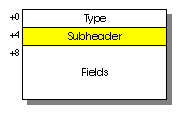 | 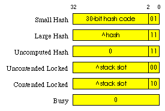 |
| (a) Subheader location in an object | (b) Subheader states |
| Figure 1 | |
|---|---|
The states of a subheader s have the following meaning:
| Small Hash |
The object is unlocked and its hash value is the given unsigned 30-bit integer:
s>>2.
|
| Large Hash |
The object is unlocked and its hash value is obtained by treating s-3
as a pointer to an integer and dereferencing it: *(int *)(s-3).
The 32-bit hash code is located in an extended
hash code pool.
|
| Uncomputed Hash | The object is unlocked and its hash value has not been computed yet. |
| Uncontended Locked |
The object is locked. s, when treated as a pointer, points
to the saved subheader in a stack slot of the thread that locked the object.
No other thread is waiting for the object's lock.
|
| Contended Locked |
The object is locked. s-2, when treated as a pointer, points
to the saved subheader in a stack slot of the thread that locked the object.
Other threads may be waiting for the object's lock.
|
| Busy | A transient state used when reading or writing the hash code of a locked object. |
Let us now take a look at the implementations of the monitor entering and exiting operations. We will start with a few examples of entering and exiting and then describe the entering and exiting procedures more precisely.
Uncontested monitor entries and exits are quite efficient, requiring
at most one atomic operation each. When a thread wants to enter the monitor
of an object o, it does the following:
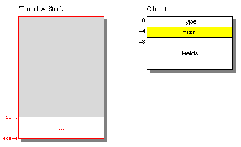1. Initially the object is unlocked
in a small hash, large
hash, or uncomputed hash
state. A thread that we'll call thread A has an area of memory
dedicated to its execution stack. The thread's stack pointer sp
points to the top of the stack, and an end of stack pointer eos
points to the stack's other end.
|
|
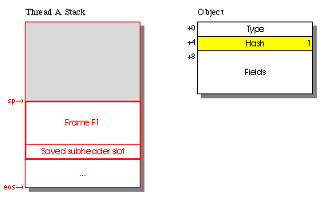2. Thread Were |
|
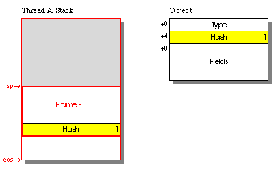3. Thread Thread |
|
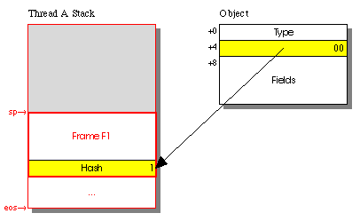4. Now thread If the compare-and-swap succeeded, thread A successfully acquired object
|
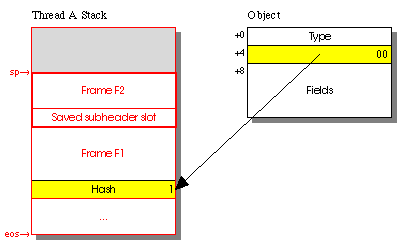5. For the sake of this example
let us suppose that function F1 called another function F2
while holding the lock on object o. F2's frame
appears on thread A's stack. F2 is also going
to attempt to acquire a lock, so it includes its own saved subheader slot.
|
|
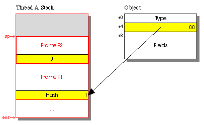6. Suppose that thread Thread At this point thread A holds object |
|
7. Sometime later function That primitive first reads the saved subheader slot and checks whether it is zero. If so, the lock was acquired recursively, so the MonitorExit is done. |
8. Function F2 deallocates
its frame and returns back to function F1.
|
|
9. At some point function That primitive first reads the saved subheader slot Thread Now thread A checks the second least significant bit of |
10. Finally function F1
returns and we're back to the state at the beginning of the example.
|
The contested case is slightly more complicated but still efficient:
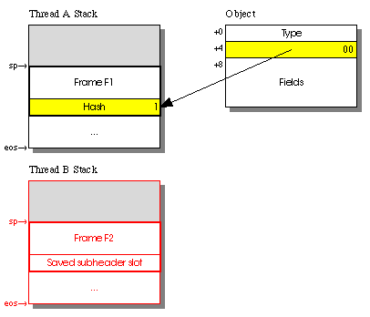1. We begin our example by
having thread A currently hold object o's lock.
Thread B, which is currently executing (red in the figure),
is about to attempt to acquire that lock. Thread A may or may
not be executing at this time -- our scheme works on multiprocessors as
well as uniprocessors.
|
|
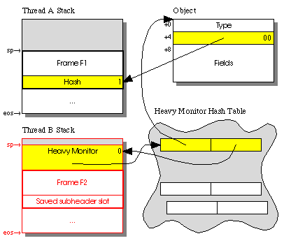2. Thread If The heavy monitor contains a sticky semaphore that is initialized to
the stopped ( |
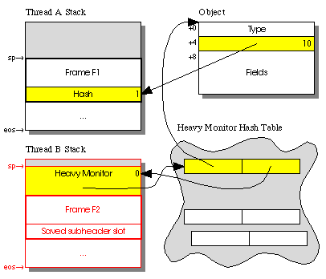3. At this point thread B
does a compare-and-swap to set the next-to-least significant bit of o's
subheader. If o's subheader changed, thread B
releases its heavy monitor and hash table entry and tries again from the
beginning of step 2 (as an optimization, if the object is still locked,
thread B could just use the new value of o's subheader
and try the compare-and-swap again without releasing the heavy monitor and
hash table entry).
|
|
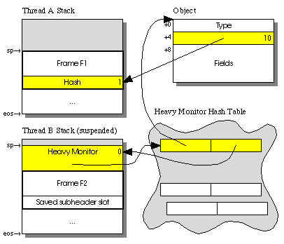4. Now thread The semaphore must be sticky -- if some other thread already set that
semaphore to |
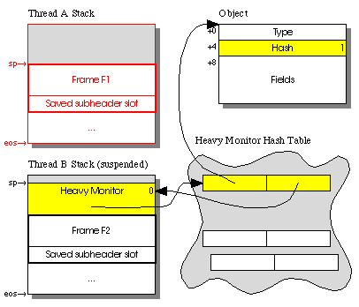5. At some later time thread
A executes an MExit (MonitorExit)
and releases object o's lock. As part of the release process
it notices that the next-to-least significant bit of o's subheader
was set and...
|
|
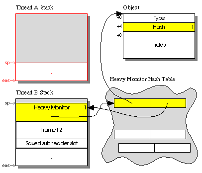6. ...it looks for any entry
referring to object o in the global hash table. If there is at least one
such entry whose semaphore is Thread |
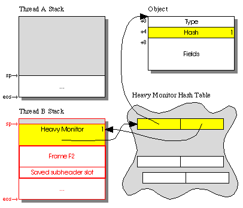7. Once its semaphore is
triggered, the scheduler restarts thread B.
|
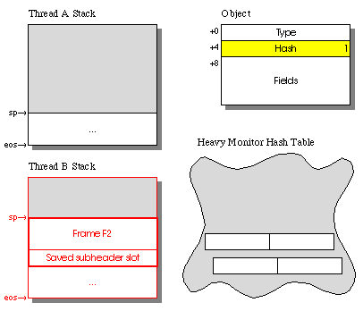8. Thread B
releases its heavy monitor and global hash table entry.
|
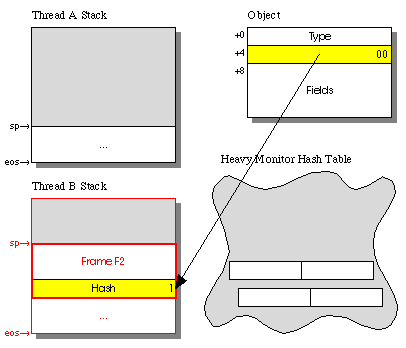9. Now thread B
starts from the beginning its MonitorEnter process. This time it succeeds
and acquires object o's lock.
|
Sometimes we may want to ask a thread to break out of an MEnter (MonitorEnter) wait to, say, handle an asynchronous exception. The MonitorEnter will terminate abnormally without having acquired a lock. We do this as illustrated in this example:
1. Let us begin as in step
4 of the contested example above. Thread B is suspended, waiting
on object o's lock held by thread A. Some other
thread C (not shown) now wants to stop thread B.
|
|
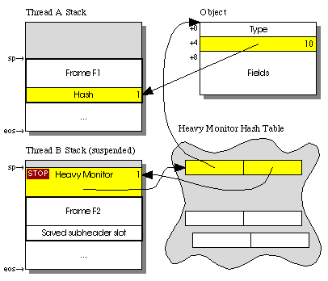2. Thread The |
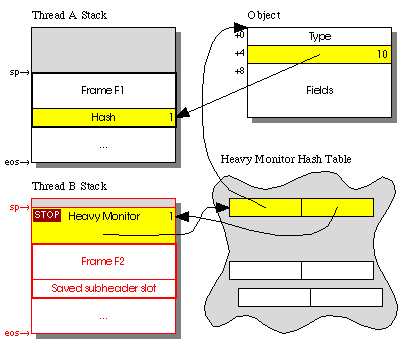3. Thread B resumes
running and notices the STOP token.
|
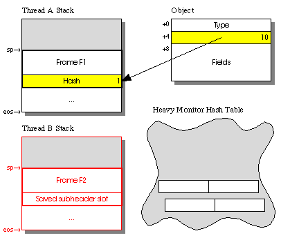4. Instead of trying to acquire
object o's lock, thread B throws an exception
out of its MonitorEnter primitive.
|
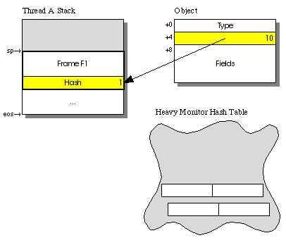5. The exception may propagate
out of function F2 and eventually kill thread B.
|
The algorithms for MonitorEnter, MonitorExit, and stopping a thread are described below. We use the following notation:
sp
eos
compare-and-swap(loc,
old, new)
sticky-wait(semaphore)
1.
semaphore is sticky, so that if it is 1 on entry,
sticky-wait returns immediately. On exit semaphore is
always 1.
The following functions operate on the global heavy monitor hash table. These functions all synchronize on a single global lock, so they are all atomic with respect to each other.
create-heavy(object)
semaphore field in heavy-lock to 0.
Clear the stop flag in heavy-lock. Return heavy-lock.
destroy-heavy(heavy-lock)
semaphore
field (note that it cannot change because create-heavy and
notify are excluded by the global hash table's lock).
notify-heavy(object)
0. If such an entry exists, set that semaphore
to 1 for exactly one such entry.
notify-heavy(object,
thread, stop)
1,
also return false. Otherwise, set that semaphore to 1 and
return true.
The algorithm that MEnter
uses to acquire the lock of an object o is as follows. sv
is the proper saved subheader slot in the current stack frame. s
and stop are local variables.
s := o->subheader
s&1 (s's least
significant bit is set):
sv := s
compare-and-swap(&o->subheader, s, &sv)
then done; otherwise go back to step 2 (some other
thread just changed the lock).
s is between sp and eos:
sv := 0
s is zero then:
h := create-heavy(o)
compare-and-swap(&o->subheader, s, s|2) then:
sticky-wait(&h->semaphore)
stop := h->stop (wait for the
lock to be released and this thread notified of that fact)
destroy-heavy(h)
stop is non-null then throw(stop); otherwise
go back to step 1.
o's lock changed while we
were creating the heavy lock):
s&1) or (s is between sp
and eos) or (s is zero) then:
destroy-heavy(h) then notify-heavy(o)
(if we were notified in the meantime, notify some
other thread waiting for o).
Steps 1, 2, and 3 can be inlined. The others occur only in cases of contention and should be performed in system routines.
The algorithm that MExit
uses to release the lock of an object o is as follows. sv
is the proper saved subheader slot in the current stack frame. s
is a local variable.
sv is zero, done (we're in the
recursive MonitorExit case).
s := &sv
compare-and-swap(&o->subheader, s, sv) then
done (we successfully restored o's subheader).
s is zero then:
not compare-and-swap(&o->subheader, s, sv) then
go back to step 4 (some other thread just changed
the lock).
s&2 is zero (s's
second-least significant bit is clear) then done.
notify-heavy(o) (some other thread
is waiting for o)
Steps 1, 2, and 3 can be inlined. The others occur only in cases of contention and should be performed in system routines.
If, while trying to stop a thread T, we determine that it
is waiting for a lock inside MonitorEnter, we can break it out of that MonitorEnter
by calling notify-heavy(o, T, stop), where stop
is the exception that we'd like that MonitorEnter to throw. If notify-heavy
returns false, then it indicates that it got to the thread too late -- it
was already restarted by some other call to notify-heavy.
We can use the following 80486 code sequences for the inline cases of MonitorEnter and MonitorExit.
The address of the object o is assumed to be in ebx;
we can rename registers as appropriate if the address is somewhere else.
The subheader is at offset 4 in the object. sv_offset is the
offset to the saved subheader slot in the current stack frame.
mov eax,[ebx+4] ;Read o->subheader.
Retry: test eax,1 ;Is it locked?
je Unlocked
sub eax,esp ;Yes. Is the stack pointer close to the subheader?
cmp eax,stack_guard_size
mov [ebp+sv_offset],0 ;Optimistically set sv to zero.
jb Done ;We're in the recursive case if the stack pointer is close
call SlowEnter ; to the subheader. If not, enter the slower case.
jmp Done
Unlocked: mov [ebp+sv_offset],eax ;Write sv and change o->subheader to &sv.
lea ecx,ebp+sv_offset
{lock} cmpxchg [ebx+4],ecx
jne Retry ;Try again if the compare-and-swap failed.
Done: ...
The cmpxchg instruction should have a lock
prefix on a multiprocessor. It's best not to use the lock prefix
on a multiprocessor because it substantially slows down the instruction.
Since access to a thread-local variable is slow under Windows NT (involving
at least the code below), we check instead whether the current stack pointer
esp is within stack_guard_size bytes below the
object's subheader. Assuming that any two stacks are separated by guard
pages at least stack_guard_size bytes long, we know that the
object was locked in the same stack.
If the test fails, we call SlowEnter which then does the
full check of whether the object's subheader is between esp
and eos, which it gets from a thread-local variable using the
code below. SlowEnter also handles the other, less frequent
cases of entering a monitor.
mov edx,__tls_index
mov ecx,fs:[0x2C]
mov ecx,[ecx+edx*4]
mov edx,[ecx+eos_offset] ;edx now contains eos.
Note that if the code is placed in a DLL that can be dynamically loaded (instead of statically loaded when the program begins executing), we must use a system call instead of the above code, and the procedure becomes several times slower.
The address of the object o is assumed to be in ebx;
we can rename registers as appropriate if the address is somewhere else.
mov ecx,[ebp+sv_offset] ;Get sv.
test ecx,ecx
je Done ;If sv==0, this is a recursive unlock and we're done.
lea eax,ebp+sv_offset
{lock} cmpxchg [ebx+4],ecx
je Done
call SlowExit ;Handle the slower cases if the compare-and-swap failed.
Done: ...
Again, the cmpxchg instruction should have a lock
prefix on a multiprocessor.
Now let us turn our attention to the hash code reading and writing operations.
When an object's hash code is negative or greater than 0x3FFFFFFF, it needs to be stored outside the object. Such hash codes can occur for strings longer than six characters. We put them into a separate area of memory called the extended hash code pool. Each hash code in that pool is a word that belongs to one and only one object in memory. We can link free pool words into a linked list if desired. We deallocate a pool word when we deallocate its object.
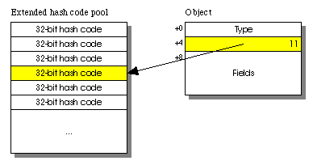
To read the hash code of an object o or "unknown"
if not known, we follow the procedure below. s and h
are local variables, and exchange is defined as:
exchange(loc, new)
s := o->subheader
s&1 (s's least
significant bit is set):
h := s (the object is unlocked)
s is between sp and eos:
h := *(int *)(s & -2) (the object
is locked by our thread, so we can read the saved subheader word directly)
s := exchange(&o->subheader, 0) (try
to make the monitor busy)
s is zero then:
s&1 (s's least
significant bit is set):
h := s (the object is unlocked)
h := *(int *)(s & -2)
o->subheader := s (restore the
monitor to its non-busy state)
(h&3) == 3 (h's
two significant bits are set):
h == 3:
*(int *)(h-3) (large hash
code)
(unsigned int)h >> 2 (small
hash code)
If the object is unlocked, we can read the hash code directly from it. If it is locked by our thread, we dereference the pointer in the object's subheader to get the saved subheader and read the hash code from that. If the object is locked by some other thread, we must temporarily put the object's subheader into the busy state so we can read that thread's saved subheader word without worrying about that thread exiting from a MonitorExit and destroying its saved subheader word in the meantime. After reading the saved subheader word we restore the object's subheader into its previous state. Here's an example of this process:
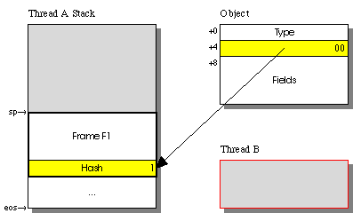1. Initially thread A
holds object o's lock, while thread B wants to
read its hash code. Thread B reads o's subheader
and notices that object o is locked by a thread other than
B.
|
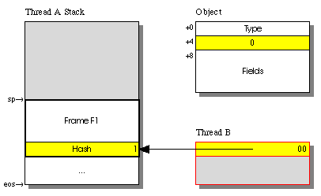2. Thread B atomically
exchanges o's subheader with zero to obtain a pointer to thread
A's saved subheader slot. Now thread B can read
the hash value from that slot. Thread A cannot erase its saved
subheader slot because o's subheader is in the busy state.
|
3. Thread B writes
the old value back into o's subheader.
|
Most objects will have their hash code computed as soon as they are created, generally using a global running counter or perhaps a processor cycle counter if available. On an 80486 processor or higher we can quickly obtain a new hash code for an object using:
mov eax,4
{lock} xadd [running_counter],eax
The xadd instruction should have a lock prefix
on a multiprocessor, although omitting it would not be disastrous -- some
objects might have duplicate hash codes.
For some special system classes such as java.lang.String
we may choose to compute an object's hash code lazily, in which case we
store 3 (the uncomputed hash state)
into the object's subheader when we create the object and only store the
hash code on demand. For such objects we need to be able to write the hash
code of an object.
Important:
We can only use lazy hash codes in cases where the function f
that computes an object's hash code is idempotent. There is a race condition
between MonitorExit and writing the hash code of a locked object that could
cause an object's hash code to be forgotten soon after it is written, so
f could get called several times on the same object. This means,
for instance, that f must not increment and return a running
counter.
To write a small hash code hash (between 0 and 0x3FFFFFFF
inclusive) into an object o, we do the following. s,
sv, and h are local variables.
h := hash<<2 | 1
s := o->subheader
s == 3:
compare-and-swap(&o->subheader, s, h) then done
else go back to step 3.
s&1, done (someone already
wrote the hash code into the object; it better be the same as hash!).
s is between sp and eos:
sv := (int *)(s & -2) (the object
is locked by our thread, so we can write the saved subheader word directly)
*sv == 3 then *sv := h
s := exchange(&o->subheader, 0) (try
to make the monitor busy)
s is zero then:
s == 3:
o->subheader := h (write the
hash and restore the monitor to its non-busy state)
(s&1) == 0 (s's
least significant bit is clear):
sv := (int *)(s & -2)
*sv == 3 then *sv := h
o->subheader := s (restore the
monitor to its non-busy state)
The race condition mentioned above exists between the write in statement
6.4.1.2 and the read of sv in MonitorExit. MonitorExit's
algorithm must read the saved subheader slot before it does the compare-and-swap
that writes the object's subheader; we could be unlucky enough to set the
object's hash code in the saved subheader slot between the read and the
compare-and-swap in MonitorExit's algorithm. This race condition can be
fixed, but doing so would substantially slow down MonitorExit.
To write a large hash code hash (negative or greater than
0x3FFFFFFF) into an object o, we do the following. w,
s, sv, and h are local variables.
w that contains
hash.h := w | 3
s := o->subheader
s == 3:
compare-and-swap(&o->subheader, s, h) then done
else go back to step 4.
s&1:
w
hash!).
s is between sp and eos:
sv := (int *)(s & -2) (the object
is locked by our thread, so we can write the saved subheader word directly)
*sv == 3 then *sv := h else deallocate
w
s is zero then:
w
In this algorithm we do not write the hash code if the object is locked by some other thread. If we did, we might slowly leak extended hash code pool words due to the above race condition.